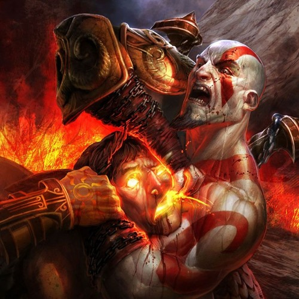

Kratos, the iconic protagonist of the God of War series, is a character of profound complexity and brutal strength. Originating from Greek mythology as a Spartan warrior, his narrative arc transitions from vengeance against the gods of Olympus to a journey of redemption and fatherhood in the Norse realms. Known for his signature ash-white skin—marked by the ashes of his deceased family—and the Blades of Chaos, Kratos embodies rage, sorrow, and a quest for freedom against the machinations of gods and fate. Over the series, he evolves from a figure consumed by anger and revenge to a more nuanced character seeking to escape his past and protect his son, Atreus, highlighting themes of growth, fatherhood, and the cycle of violence. Kratos' journey is not just a tale of battles and gods but also a deeply personal story of a man fighting against his demons, both literal and metaphorical, making him one of the most enduring and compelling characters in video game history.
To understand Kratos's story fully this is the best order to play the franchise in: